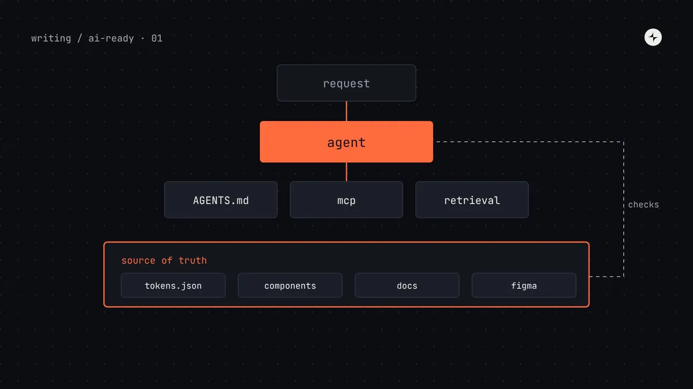
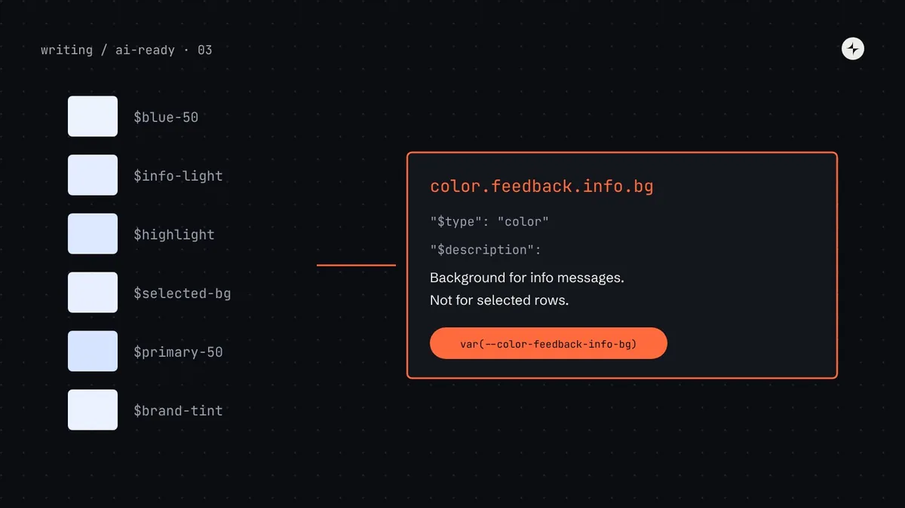
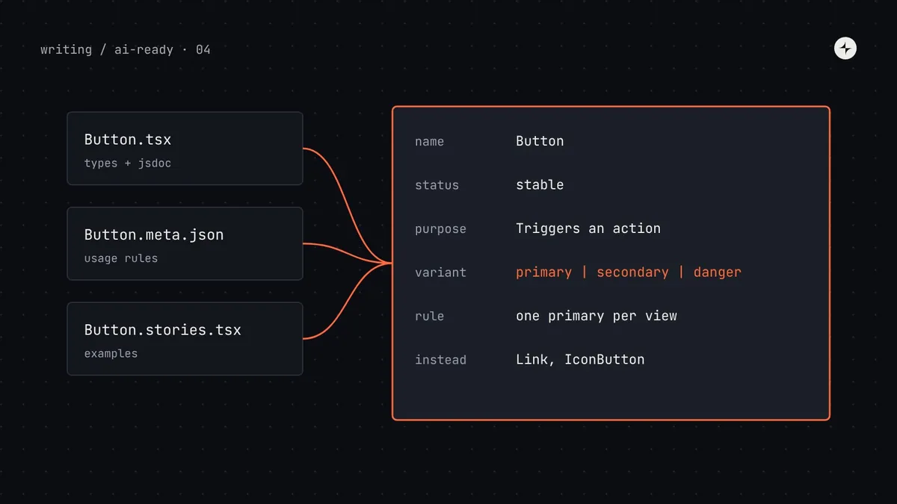
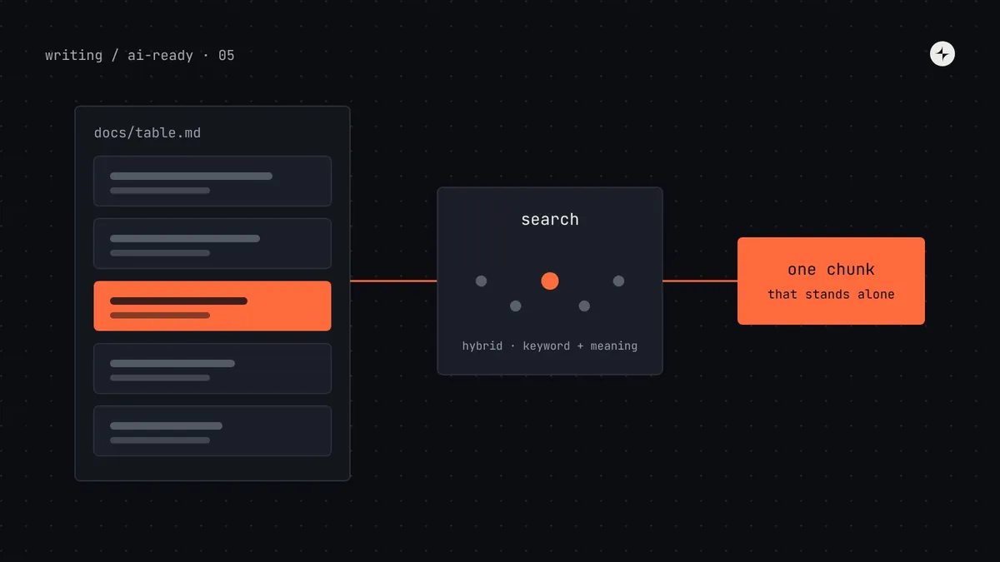
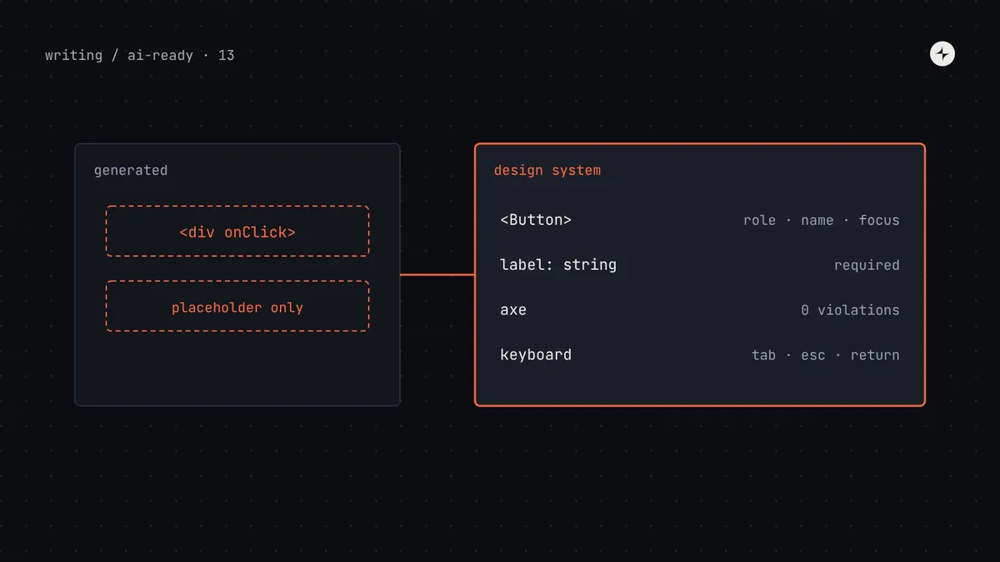
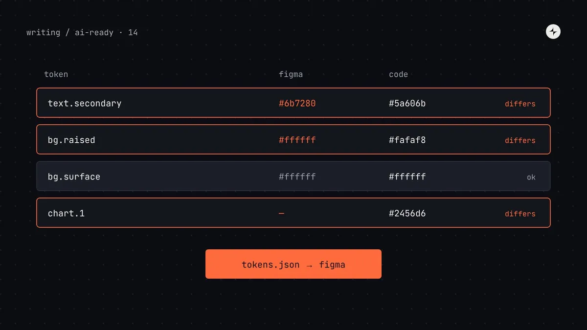
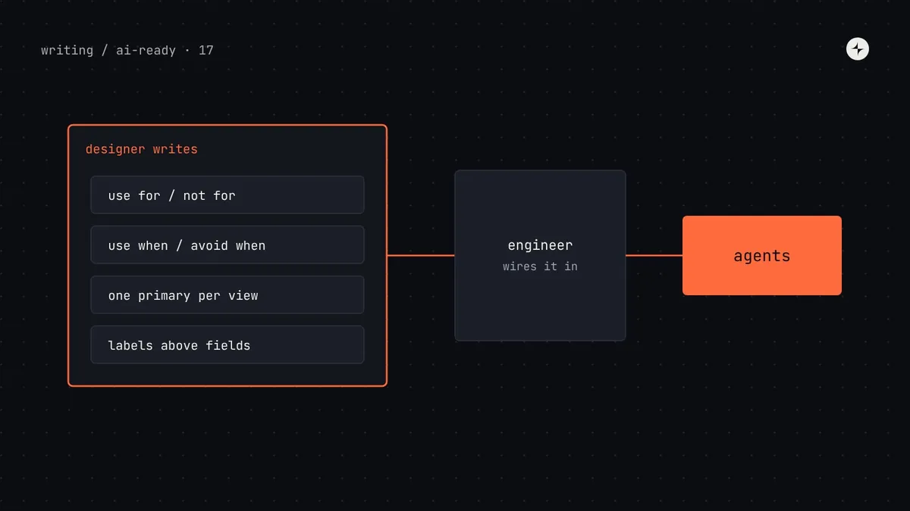
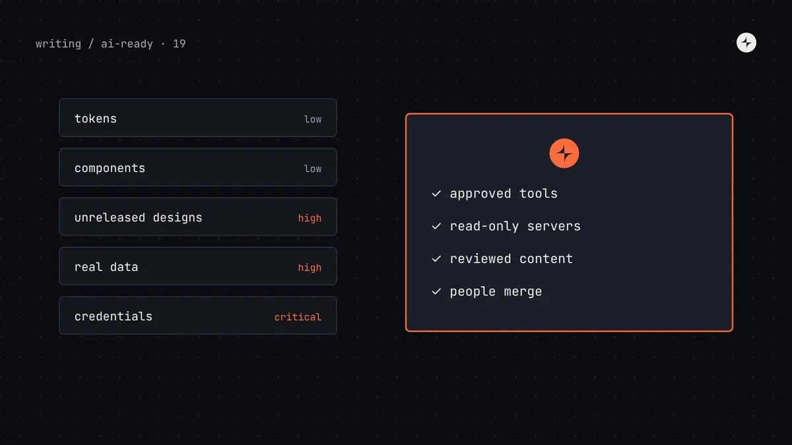

WritingCourse
AI-ready design systems: a practical course
A twenty-part, step-by-step course on making a design system that AI agents can find, understand and use correctly: tokens, component metadata, docs, rules files, MCP servers, Figma and guardrails, then the problems teams hit most, answered one by one.
Written for product designers, design system designers, design technologists and engineers with an existing system and no background in AI agents. Every part explains the terms it uses, follows one realistic system from problem to working setup, and ends with checks you can run.
20 parts216 min in total7 stages

Part 1 of 20What is an AI-ready design system? A complete guide for design system teamsWhat makes a design system AI-ready: one source of truth, machine-readable tokens and components, agent access via AGENTS.md and MCP, and guardrails.14 min read · Guide Part 2 of 20How AI coding agents use your design system, and where they go wrongWhat Claude Code, Cursor, Copilot and Codex read when they build UI, why they copy legacy code and hard-code values, and a one-hour audit to run.12 min read
Part 2 of 20How AI coding agents use your design system, and where they go wrongWhat Claude Code, Cursor, Copilot and Codex read when they build UI, why they copy legacy code and hard-code values, and a one-hour audit to run.12 min read
Part 3 of 20Design tokens for AI agentsMake design tokens usable by AI agents: DTCG 2025.10 JSON, semantic names, $description and $deprecated, an agent manifest from Style Dictionary, and checks.13 min read
Part 4 of 20Component metadata for AI agentsDescribe components so AI agents use them correctly: typed props, JSDoc, react-docgen, Storybook manifests, Custom Elements Manifest and usage schemas.14 min read
Part 5 of 20Writing design system documentation AI agents can use, and how retrieval finds itHow to write design system docs for AI agents and RAG: self-contained sections, a page template, Markdown frontmatter, chunking, hybrid search and tests.13 min read Part 6 of 20AGENTS.md, llms.txt and rules files for design systemsWhat a design system should put in AGENTS.md, CLAUDE.md, Cursor and Copilot rules, how to sync many repos, and how to write llms.txt for your docs.13 min read
Part 6 of 20AGENTS.md, llms.txt and rules files for design systemsWhat a design system should put in AGENTS.md, CLAUDE.md, Cursor and Copilot rules, how to sync many repos, and how to write llms.txt for your docs.13 min read Part 7 of 20Build an MCP server for your design systemBuild a Model Context Protocol server for your design system: tool design, working code, Storybook and shadcn options, Inspector testing and setup.15 min read
Part 7 of 20Build an MCP server for your design systemBuild a Model Context Protocol server for your design system: tool design, working code, Storybook and shadcn options, Inspector testing and setup.15 min read Part 8 of 20Figma to code with AIGet on-system code from Figma: connect the Figma MCP server, match variables to tokens, mirror props in properties and map components with Code Connect.12 min read
Part 8 of 20Figma to code with AIGet on-system code from Figma: connect the Figma MCP server, match variables to tokens, mirror props in properties and map components with Code Connect.12 min read Part 9 of 20Guardrails for AI-generated UIKeep AI-generated UI on-system: ESLint and Stylelint rules with fix-it messages, axe and visual tests, one check command, and evals that track progress.11 min read
Part 9 of 20Guardrails for AI-generated UIKeep AI-generated UI on-system: ESLint and Stylelint rules with fix-it messages, axe and visual tests, one check command, and evals that track progress.11 min read Part 10 of 20How to make a legacy design system AI-readyA phased plan to make an existing design system AI-ready without a rewrite: baseline, one source of truth, metadata, AGENTS.md, MCP, Figma and codemods.13 min read
Part 10 of 20How to make a legacy design system AI-readyA phased plan to make an existing design system AI-ready without a rewrite: baseline, one source of truth, metadata, AGENTS.md, MCP, Figma and codemods.13 min read Part 11 of 20Why does AI ignore my design system? 10 causes and how to fix eachWhy Cursor, Claude Code, Copilot and AI prototyping tools ignore your components and tokens: ten causes, how to diagnose each in minutes, and the fixes.10 min read
Part 11 of 20Why does AI ignore my design system? 10 causes and how to fix eachWhy Cursor, Claude Code, Copilot and AI prototyping tools ignore your components and tokens: ten causes, how to diagnose each in minutes, and the fixes.10 min read Part 12 of 20How much design system context does an AI agent need? Avoiding context overloadWhy giving AI agents your whole design system makes results worse: context windows, rules file length, too many MCP tools and progressive disclosure.9 min read
Part 12 of 20How much design system context does an AI agent need? Avoiding context overloadWhy giving AI agents your whole design system makes results worse: context windows, rules file length, too many MCP tools and progressive disclosure.9 min read
Part 13 of 20Why is AI-generated UI inaccessible, and how can a design system fix it?Why AI-generated UI fails accessibility, what research shows, and how a design system fixes it: accessible components, rules, lint, axe and keyboard tests.8 min read
Part 14 of 20Figma variables and code tokens out of sync? How to fix token drift before AI copies itFix drift between Figma variables and code tokens: pick a source of truth, reconcile with a script, sync via DTCG import or Tokens Studio, check in CI.9 min read Part 15 of 20How do I make Figma Make, v0 and Lovable use my design system?Get AI prototyping tools to use your design system: Figma Make kits, v0 design systems and registries, Lovable design system projects, and guidelines that work.9 min read
Part 15 of 20How do I make Figma Make, v0 and Lovable use my design system?Get AI prototyping tools to use your design system: Figma Make kits, v0 design systems and registries, Lovable design system projects, and guidelines that work.9 min read Part 16 of 20Is shadcn/ui better for AI? Choosing a component library AI agents can useWhy AI tools favour shadcn/ui, which advantages your own design system can copy, when to switch or stay, and how to publish your components as a registry.8 min read
Part 16 of 20Is shadcn/ui better for AI? Choosing a component library AI agents can useWhy AI tools favour shadcn/ui, which advantages your own design system can copy, when to switch or stay, and how to publish your components as a registry.8 min read
Part 17 of 20Can designers make a design system AI-ready without coding?What designers can do to make a design system AI-ready without code: token descriptions, usage rules, Figma prep, tool guidelines, templates and prompts.8 min read Part 18 of 20Who owns the AI rules? Governance for an AI-ready design systemWho owns AGENTS.md, token descriptions and agent output: a decision-rights table, CODEOWNERS for AI rules, a policy for agent work and a feedback loop.8 min read
Part 18 of 20Who owns the AI rules? Governance for an AI-ready design systemWho owns AGENTS.md, token descriptions and agent output: a decision-rights table, CODEOWNERS for AI rules, a policy for agent work and a feedback loop.8 min read
Part 19 of 20Is it safe to connect your design system to AI tools? Security, privacy and IPSecurity, privacy and IP when connecting a design system to AI tools: what's sensitive, data flows, prompt injection, MCP risks and a policy template.8 min read Part 20 of 20How do you prove the ROI of an AI-ready design system?Build a business case for an AI-ready design system from your own numbers: baseline evals, rework and review savings, a payback model and ranges.9 min read
Part 20 of 20How do you prove the ROI of an AI-ready design system?Build a business case for an AI-ready design system from your own numbers: baseline evals, rework and review savings, a payback model and ranges.9 min read Building a systemAI in design systemsWhere AI genuinely helps design system teams today (docs, release notes, checks, migrations) and the cautions that matter when mistakes spread to every product.5 min read
Building a systemAI in design systemsWhere AI genuinely helps design system teams today (docs, release notes, checks, migrations) and the cautions that matter when mistakes spread to every product.5 min read Foundations & tokensDesign tokensWhat design tokens are, the three tiers, naming, the DTCG 2025.10 format and how tokens reach code. Examples and JSON you can adapt for your system.10 min read · Guide
Foundations & tokensDesign tokensWhat design tokens are, the three tiers, naming, the DTCG 2025.10 format and how tokens reach code. Examples and JSON you can adapt for your system.10 min read · Guide Building a systemKeeping Figma and code in sync: five habits that stop driftHow to stop Figma and code drifting apart: one vocabulary, one token source, a shared definition of done, a monthly twin check and links between them.7 min read
Building a systemKeeping Figma and code in sync: five habits that stop driftHow to stop Figma and code drifting apart: one vocabulary, one token source, a shared definition of done, a monthly twin check and links between them.7 min read